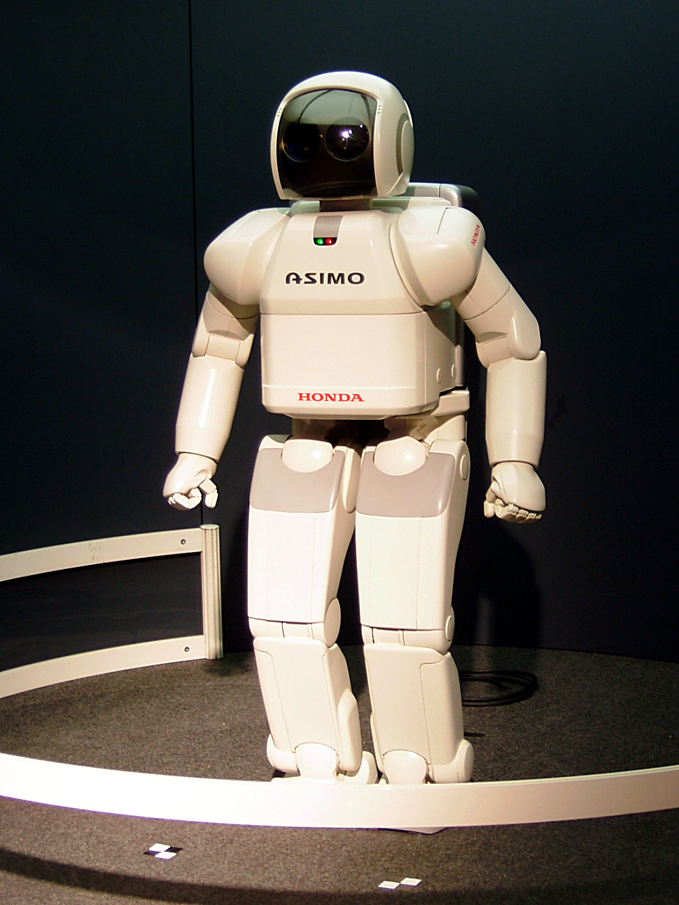

Automation in the Workplace
Overview
How much has automation taken over the workspace?
Technology worldwide has advanced at an incredible rate. With each new year, the way we accomplish tasks and produce goods are being done in a more efficient and faster way. Companies are always looking to produce the most content at the cheapest price, and as a result use technology to aid in this process. As this desire for goods increases, robots and other forms of automation have been implemented to meet these demands. This new wave of robots in the workplace offers companies with an alternative to the human worker, creating a way for them to essentially have the same quality end product that a human worker can produce, at a lower cost.
What does implementing robots accomplish?
As a new age of engineering and advancement in the workplace comes around, companies are implementing more and more machinery into their production methods. Robots in many cases have been proven to produce goods faster and at the same quality as humans. Businesses are looking for whatever way they can to maximize their means of production, and in most all cases, automation is the most cost effective way. All of this will in turn greatly increase the profits of companies by varying percentages.
Tools to assist in on the job?
While machines are evolving at a pace where they can in some cases replace human workers, often times companies use robotics as simply tools that people to increase productivity. The underlying principle of automation and machinery in factories, stores, and other businesses, is to speed up the production process. With the use of human guided tools, companies can still keep workers while having a vast increase in production times. Factories all across the world have made strides in automation, in some cases creating a “workerless” workspace. While this method of automation servers the purpose of increasing profits, the loss of human work has negative ramifications on the ones who were previously employed.
How important is automation?
Robotics and automation are on the forefront of today's economy and society as a whole. Full scale automation in some cases is actually a better alternative than keeping human workers. This is mainly due to the fact that with the phasing out of people working in lower skilled jobs, society as a whole becomes more educated because the jobs available require more specialization. This will in turn improve the lives of everyone. This phenomenon is present in society's all around the globe, as companies increasingly opt to use machines to replace their human counterparts.

Video of industrial robots
A Timeline of Mechanical Intergration
1850 |
First sewing machines introduced, greatly reducing the amount of workers needed |
1860 |
Grain elevators introduced, jobs are cut as a result, causing workers to go on strike |
1930 |
The term "technological unemplyment" is coined as more and more jobs become more mechanized |
1950 |
Ford assembly lines create one of the first automated controls, ultimatley replacing the need for some human workers. |
1990 |
Introduction of computers greatly increases efficency of company manegment and stock tracking. |
2000's |
The constant advances in technology continue to increase the effectivity of many workplaces with advances being made constantly.. |
We could not stop it if we would. It is advancing by leaps and bounds, gaining in impetus with each year. It is giving us more machines, faster machines, machines increasingly more intricate and complex. Life in the future will be speeded up infinitely beyond the present. - Raymond B. Fosdick
About the Author
Elijah Butts is currently a student at FSU, hoping to pursue a career in the field of IT. He is an all around cool dude.
Images via Wikipedia
Colors Square